Discovering Gunsan
My first ever trip in Korea was a 3-day, 2-night adventure to Gunsan with my lab friends. The trip was extra special because it included visiting 보은언니’s family home — an experience that made me feel more connected to Korean culture and community. I was both nervous and excited because it was the first time traveling with friends outside of a school or work event. By the end of the trip, Gunsan had given me a feeling of comfort and discovery that I’ll never forget.
🚍 The Journey Begins
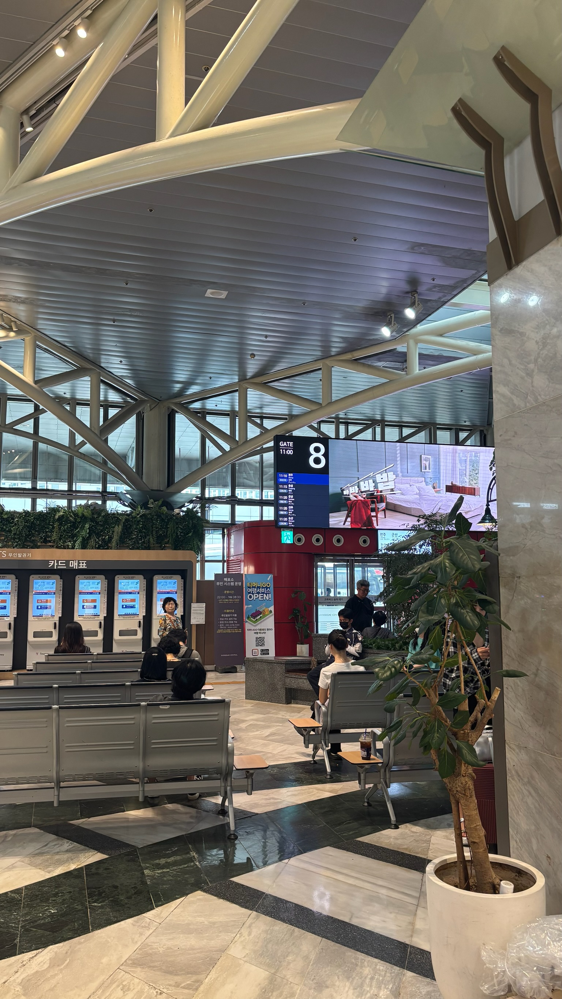We started the trip bright and early, waiting for our bus to Gunsan. The station felt lively, and there was a mix of excitement and nervousness as I prepared for my very first trip outside Seoul. Watching people rushing around the terminal made me realize how many different stories begin at a bus gate. The ride itself felt like a little window into daily life, with changing landscapes outside the window and chatter inside the bus.
🏠 A Warm Welcome
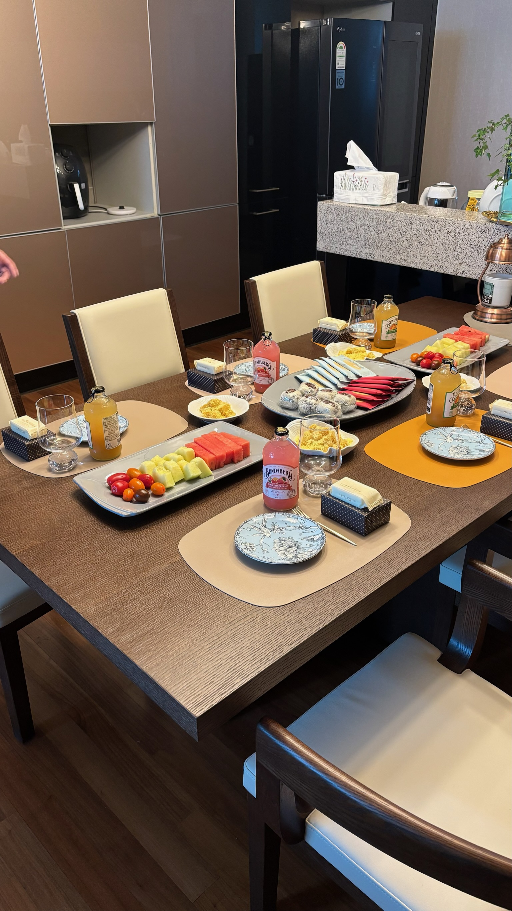When we arrived, 보은언니’s family welcomed us with so much warmth. I felt instantly at home, surrounded by good food, laughter, and kindness. Their generosity reminded me of the way family bonds create a sense of belonging no matter where you are. The living room was filled with energy as we shared stories and got comfortable right away.
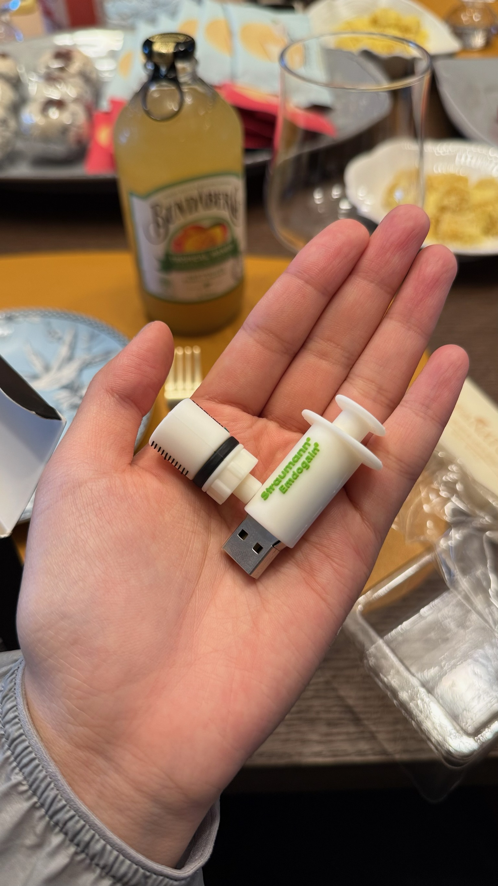To my surprise, they even gave us small gifts. That thoughtful gesture made me feel truly included, even as a newcomer to Korea. Holding the gift in my hands felt like a piece of memory I could carry back with me. It wasn’t the size of the gift but the kindness behind it that left the biggest impression on me.
🃏 Learning New Games
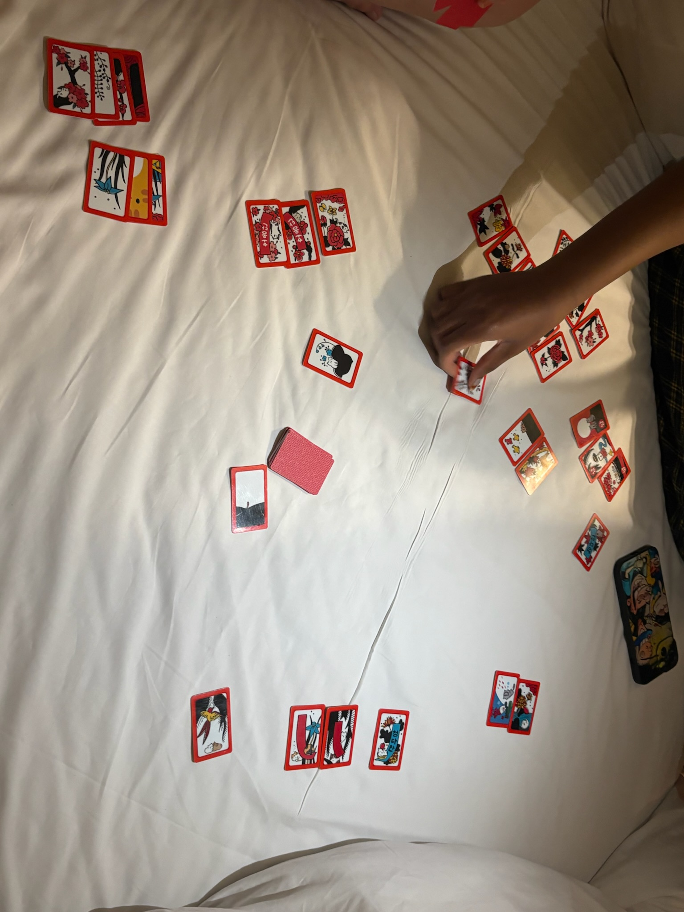That evening, we sat together and I learned how to play a Korean card game for the first time. It was confusing at first, but soon we were laughing and cheering each other on like old friends. The rhythm of slapping cards on the table filled the room with excitement. Even when I lost, the fun of learning something new kept me smiling.
🍽️ Food and Fun
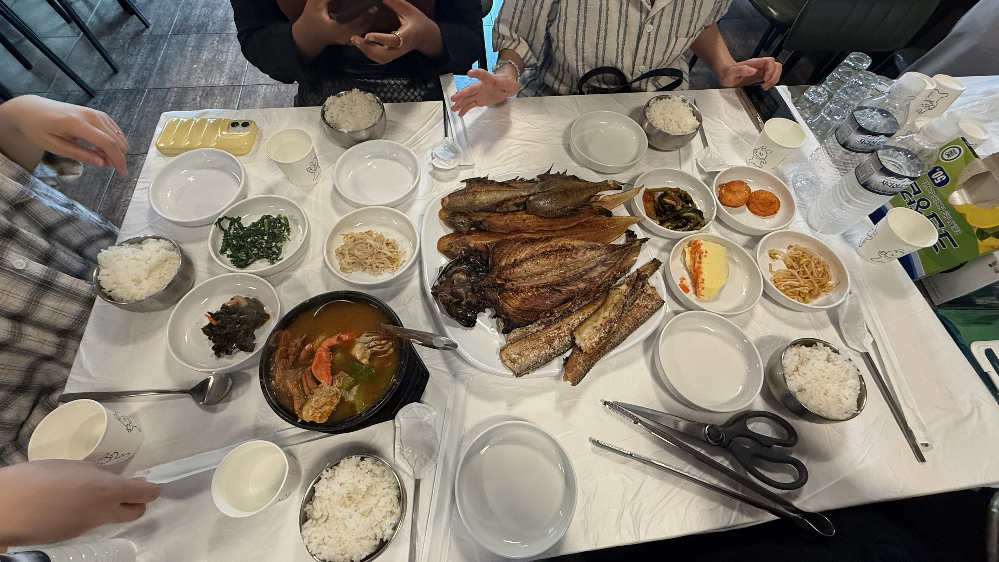The next morning began with a table full of delicious breakfast foods. It felt more like a family gathering than a trip, which I loved. The table was colorful with fruits, drinks, and snacks that showed the effort put into hosting us. Eating together gave me a moment to pause and enjoy how food connects people across cultures.
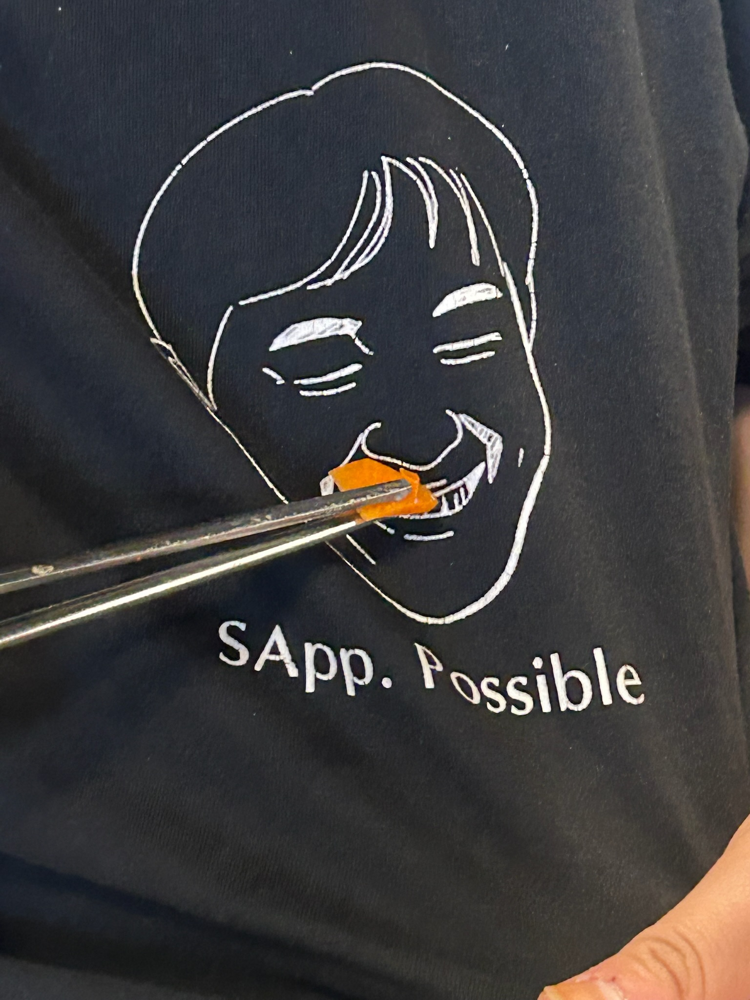At breakfast, I caught a hilarious moment of 언니 pretending to “feed” our professor. Everyone burst out laughing — one of those lighthearted travel memories that stays with you forever. It reminded me how travel is not only about places but about small inside jokes. These little moments are what make friendships stronger.
🏛️ Exploring History
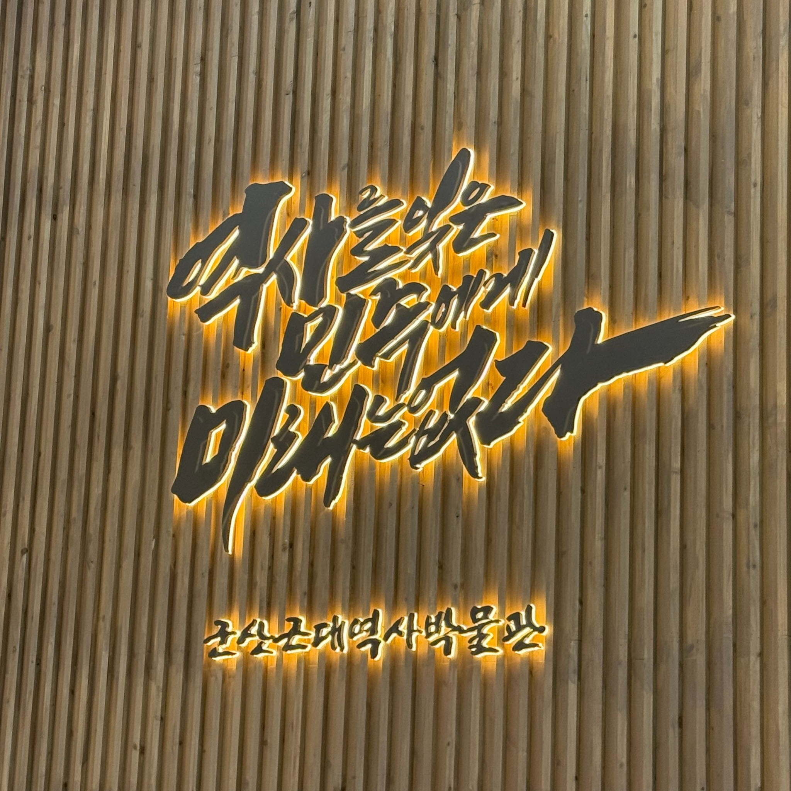 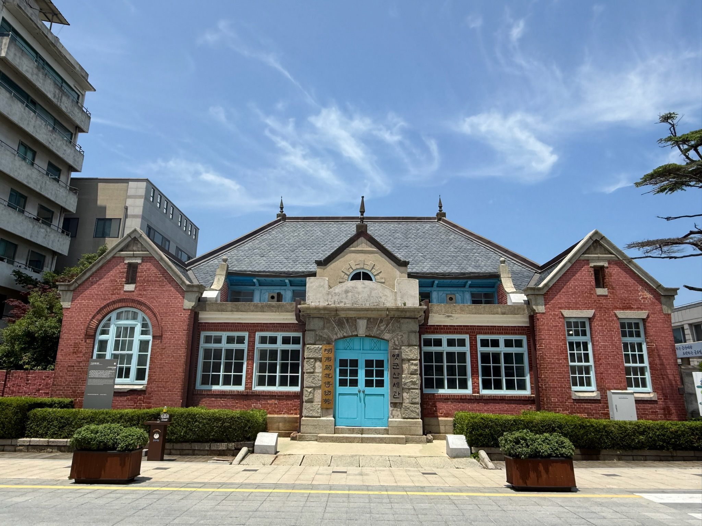After eating, we visited a local museum that highlighted Gunsan’s role in Korean history. It was both educational and eye-opening, and I left feeling like I understood the city on a deeper level. The exhibits reminded me how every place holds stories waiting to be told. Standing in front of the displays gave me a quiet moment to reflect on the past.
🚂 Gyeongam-dong Railway Village
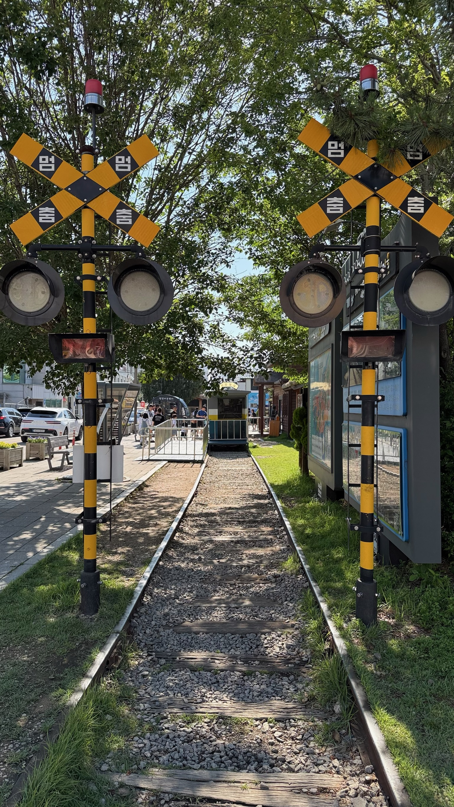 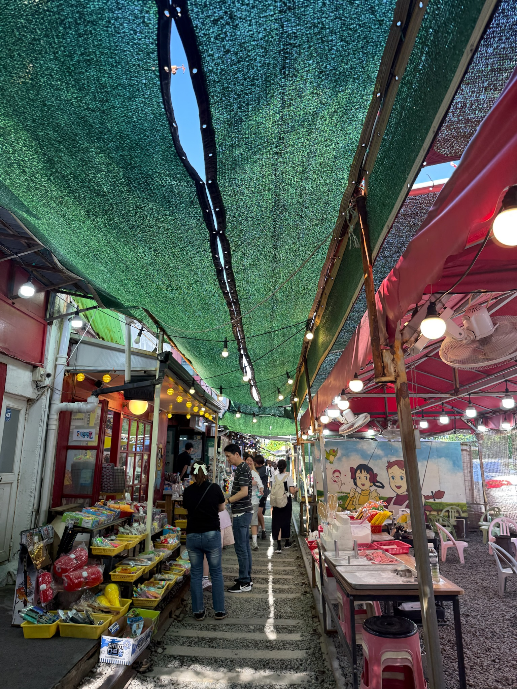 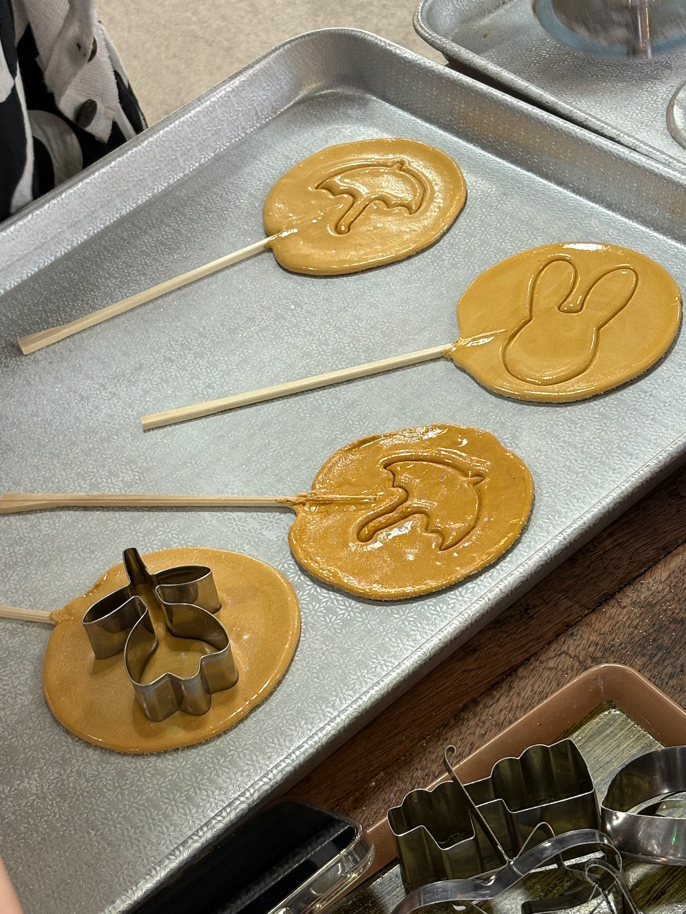One of my favorite stops was the Gyeongam-dong Railway Village, a nostalgic area filled with old train tracks, vintage signs, and quirky shops. It felt like stepping back in time, but also buzzing with tourists and street snacks. I could almost imagine what the area might have looked like decades ago when trains still ran. The mix of past and present made it one of the most unique places on the trip.
🦀 A Flavorful Goodbye
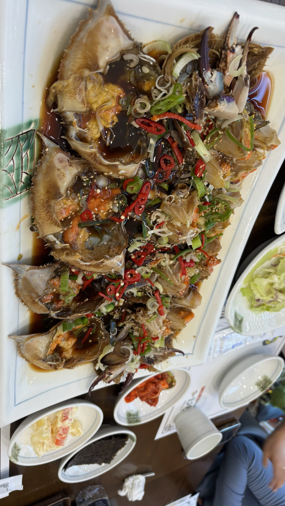On our final day, we had another big meal and I tried marinated crab for the very first time. The flavor was intense but delicious, and it felt like the perfect way to wrap up my Gunsan adventure. It was a little intimidating at first, but my friends guided me on how to eat it properly. That taste will always remind me of this trip’s happy ending.
Overallsss, this trip was unforgettable — not just because of the places we visited, but because of the warmth, laughter, and cultural connections I experienced along the way. Gunsan will always hold a special place in my heart as my first trip in Korea 🇰🇷. Looking back, I realize it wasn’t just a travel experience but a memory stitched with friendship and belonging. That’s what makes it truly priceless.